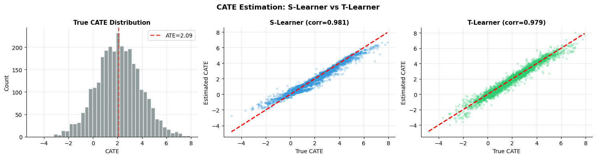
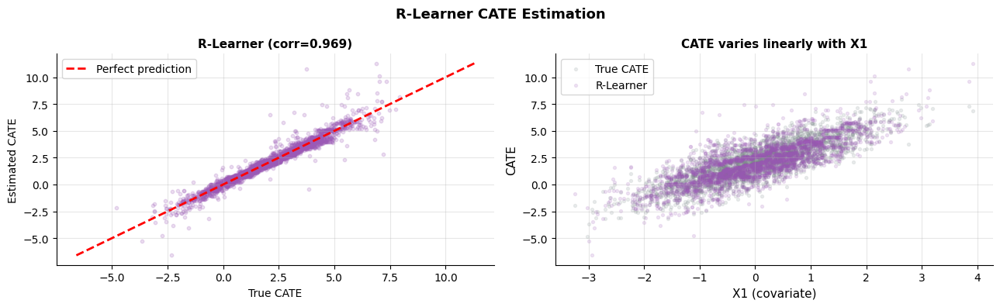

How do you estimate individual-level treatment effects?#
Topics: CATE · S-Learner · T-Learner · X-Learner · R-Learner · EconML
Note: This notebook uses
econml. Install with:pip install econml
1. CATE & Meta-Learners Overview#
What it is#
CATE (Conditional Average Treatment Effect):
E[Y(1)-Y(0) | X=x]Individual-level treatment effect that varies with covariates X
Meta-learners use any off-the-shelf ML model to estimate CATE
Why CATE matters#
ATE tells you the average effect — CATE tells you who benefits most
Enables personalized treatment policies — target interventions to those who respond
Foundation for uplift modeling and causal forests
Assumptions (all meta-learners)#
Unconfoundedness: Y(0),Y(1) ⊥ T | X — no unmeasured confounders
Positivity/Overlap: 0 < P(T=1|X) < 1 for all X
SUTVA: no interference between units
Validation#
Overlap plot — propensity scores should overlap between groups
AUUC (Area Under Uplift Curve) on held-out data
Refutation tests — add random confounder, check estimate changes
If violated#
Ignorability violated → IV-based CATE, sensitivity analysis
Positivity violated → trim extreme propensity scores, restrict to overlap region
import numpy as np
import matplotlib.pyplot as plt
from sklearn.ensemble import RandomForestRegressor, GradientBoostingRegressor
from sklearn.linear_model import LinearRegression
from sklearn.model_selection import cross_val_predict
from sklearn.preprocessing import StandardScaler
np.random.seed(42)
n = 3000
# True heterogeneous treatment effect: CATE(x) = 2 + 1.5*x1 - x2
X1 = np.random.randn(n); X2 = np.random.randn(n); X3 = np.random.randn(n)
X = np.column_stack([X1, X2, X3])
true_cate = 2.0 + 1.5*X1 - 1.0*X2
# Random treatment assignment
T = np.random.binomial(1, 0.5, n)
Y = true_cate * T + 0.5*X1 + 0.3*X2 + np.random.randn(n)
print(f"True CATE range: [{true_cate.min():.2f}, {true_cate.max():.2f}]")
print(f"True ATE : {true_cate.mean():.3f}")
# S-Learner: single model with T as feature
def s_learner(X, T, Y, model=None):
if model is None:
model = GradientBoostingRegressor(n_estimators=100, random_state=42)
XT = np.column_stack([X, T])
model.fit(XT, Y)
cate = (model.predict(np.column_stack([X, np.ones(len(X))])) -
model.predict(np.column_stack([X, np.zeros(len(X))])))
return cate
# T-Learner: separate models per treatment arm
def t_learner(X, T, Y):
m0 = GradientBoostingRegressor(n_estimators=100, random_state=42)
m1 = GradientBoostingRegressor(n_estimators=100, random_state=42)
m0.fit(X[T==0], Y[T==0])
m1.fit(X[T==1], Y[T==1])
return m1.predict(X) - m0.predict(X)
cate_s = s_learner(X, T, Y)
cate_t = t_learner(X, T, Y)
corr_s = np.corrcoef(true_cate, cate_s)[0,1]
corr_t = np.corrcoef(true_cate, cate_t)[0,1]
print(f"S-Learner correlation with true CATE: {corr_s:.3f}")
print(f"T-Learner correlation with true CATE: {corr_t:.3f}")
fig, axes = plt.subplots(1, 3, figsize=(15, 4))
# True CATE distribution
axes[0].hist(true_cate, bins=40, color='#7F8C8D', alpha=0.85, edgecolor='white')
axes[0].axvline(true_cate.mean(), color='#E74C3C', linewidth=2, linestyle='--',
label=f'ATE={true_cate.mean():.2f}')
axes[0].set_xlabel('CATE'); axes[0].set_ylabel('Count')
axes[0].set_title('True CATE Distribution', fontsize=11, fontweight='bold')
axes[0].legend(fontsize=10); axes[0].grid(True, alpha=0.3)
axes[0].spines['top'].set_visible(False); axes[0].spines['right'].set_visible(False)
# S-Learner vs true
axes[1].scatter(true_cate, cate_s, alpha=0.2, s=10, color='#3498DB')
lims = [min(true_cate.min(), cate_s.min()), max(true_cate.max(), cate_s.max())]
axes[1].plot(lims, lims, 'r--', linewidth=2)
axes[1].set_xlabel('True CATE'); axes[1].set_ylabel('Estimated CATE')
axes[1].set_title(f'S-Learner (corr={corr_s:.3f})', fontsize=11, fontweight='bold')
axes[1].grid(True, alpha=0.3)
axes[1].spines['top'].set_visible(False); axes[1].spines['right'].set_visible(False)
# T-Learner vs true
axes[2].scatter(true_cate, cate_t, alpha=0.2, s=10, color='#2ECC71')
axes[2].plot(lims, lims, 'r--', linewidth=2)
axes[2].set_xlabel('True CATE'); axes[2].set_ylabel('Estimated CATE')
axes[2].set_title(f'T-Learner (corr={corr_t:.3f})', fontsize=11, fontweight='bold')
axes[2].grid(True, alpha=0.3)
axes[2].spines['top'].set_visible(False); axes[2].spines['right'].set_visible(False)
plt.suptitle('CATE Estimation: S-Learner vs T-Learner', fontsize=13, fontweight='bold')
plt.tight_layout()
plt.savefig('cate_metalearners.png', dpi=120, bbox_inches='tight')
plt.show()
True CATE range: [-4.81, 7.92]
True ATE : 2.086
S-Learner correlation with true CATE: 0.981
T-Learner correlation with true CATE: 0.979

2. X-Learner & R-Learner#
X-Learner#
Improves T-Learner when treatment groups are imbalanced
Step 1: Fit outcome models mu_0, mu_1 per group (like T-Learner)
Step 2: Impute counterfactual treatment effects for each unit
Step 3: Fit CATE models on imputed effects
Step 4: Combine using propensity-weighted average
R-Learner#
Based on Robinson (1988) decomposition
Residualizes both outcome and treatment on covariates X
Fits CATE to predict outcome residuals from treatment residuals
Most statistically efficient meta-learner — recommended default
When to use which#
Learner |
Best when |
|---|---|
S-Learner |
Simple, few features, small dataset |
T-Learner |
Balanced groups, flexible baseline |
X-Learner |
Imbalanced treatment groups |
R-Learner |
Default — most robust, best statistical properties |
Additional assumptions#
X-Learner: good base learner fit in each treatment arm
R-Learner: cross-fitting assumption — nuisance models fit on held-out data
import numpy as np
import matplotlib.pyplot as plt
from sklearn.ensemble import GradientBoostingRegressor
from sklearn.linear_model import LogisticRegression
from sklearn.model_selection import cross_val_predict
np.random.seed(42)
n = 3000
X1 = np.random.randn(n); X2 = np.random.randn(n)
X = np.column_stack([X1, X2])
true_cate = 2.0 + 1.5*X1 - 1.0*X2
T = np.random.binomial(1, 0.5, n)
Y = true_cate * T + 0.5*X1 + np.random.randn(n)
# R-Learner from scratch
def r_learner(X, T, Y, n_splits=5):
from sklearn.model_selection import KFold
kf = KFold(n_splits=n_splits, shuffle=True, random_state=42)
m_hat = np.zeros(n) # E[Y|X]
e_hat = np.zeros(n) # E[T|X]
for tr_idx, val_idx in kf.split(X):
rf_y = GradientBoostingRegressor(n_estimators=100, random_state=42)
rf_y.fit(X[tr_idx], Y[tr_idx])
m_hat[val_idx] = rf_y.predict(X[val_idx])
lr = LogisticRegression()
lr.fit(X[tr_idx], T[tr_idx])
e_hat[val_idx] = lr.predict_proba(X[val_idx])[:, 1]
Y_res = Y - m_hat
T_res = T - e_hat
mask = np.abs(T_res) > 0.01
cate_model = GradientBoostingRegressor(n_estimators=100, random_state=42)
cate_model.fit(X[mask], Y_res[mask] / T_res[mask],
sample_weight=T_res[mask]**2)
return cate_model.predict(X)
cate_r = r_learner(X, T, Y)
corr_r = np.corrcoef(true_cate, cate_r)[0,1]
print(f"R-Learner correlation with true CATE: {corr_r:.3f}")
# Try EconML if available
try:
from econml.dml import LinearDML
dml = LinearDML(random_state=42)
dml.fit(Y, T, X=X)
cate_econml = dml.effect(X)
corr_econml = np.corrcoef(true_cate, cate_econml)[0,1]
print(f"EconML LinearDML correlation : {corr_econml:.3f}")
has_econml = True
except ImportError:
print("EconML not installed — install with: pip install econml")
cate_econml = cate_r
corr_econml = corr_r
has_econml = False
fig, axes = plt.subplots(1, 2, figsize=(13, 4))
# R-Learner vs true
lims = [min(true_cate.min(), cate_r.min()), max(true_cate.max(), cate_r.max())]
axes[0].scatter(true_cate, cate_r, alpha=0.2, s=10, color='#9B59B6')
axes[0].plot(lims, lims, 'r--', linewidth=2, label='Perfect prediction')
axes[0].set_xlabel('True CATE'); axes[0].set_ylabel('Estimated CATE')
axes[0].set_title(f'R-Learner (corr={corr_r:.3f})', fontsize=11, fontweight='bold')
axes[0].legend(fontsize=10); axes[0].grid(True, alpha=0.3)
axes[0].spines['top'].set_visible(False); axes[0].spines['right'].set_visible(False)
# CATE by X1
sort_idx = np.argsort(X1)
axes[1].scatter(X1, true_cate, alpha=0.15, s=8, color='#7F8C8D', label='True CATE')
axes[1].scatter(X1, cate_r, alpha=0.15, s=8, color='#9B59B6', label='R-Learner')
axes[1].set_xlabel('X1 (covariate)', fontsize=11)
axes[1].set_ylabel('CATE', fontsize=11)
axes[1].set_title('CATE varies linearly with X1', fontsize=11, fontweight='bold')
axes[1].legend(fontsize=10); axes[1].grid(True, alpha=0.3)
axes[1].spines['top'].set_visible(False); axes[1].spines['right'].set_visible(False)
plt.suptitle('R-Learner CATE Estimation', fontsize=13, fontweight='bold')
plt.tight_layout()
plt.savefig('r_learner.png', dpi=120, bbox_inches='tight')
plt.show()
R-Learner correlation with true CATE: 0.969
/opt/hostedtoolcache/Python/3.11.15/x64/lib/python3.11/site-packages/tqdm/auto.py:21: TqdmWarning: IProgress not found. Please update jupyter and ipywidgets. See https://ipywidgets.readthedocs.io/en/stable/user_install.html
from .autonotebook import tqdm as notebook_tqdm
EconML LinearDML correlation : 1.000

Interview Q&A#
S-Learner vs T-Learner — which is better?
T-Learner better when treatment effect is heterogeneous — separate models capture group differences
S-Learner better when treatment effect is small — pooling increases sample size
T-Learner can overfit with imbalanced treatment groups — use X-Learner then
What is the R-Learner’s key advantage?
Uses cross-fitting (like cross-validation) for nuisance estimation — avoids overfitting bias
Robinson decomposition is semiparametrically efficient — best statistical properties
Model-agnostic — any ML model can be the final CATE learner
How do you evaluate CATE estimates without ground truth?
AUUC on held-out data — rank by estimated CATE, check if top-ranked have higher outcomes
Calibration — group units by estimated CATE decile, check if mean observed effect matches
Refutation tests — adding a random confounder should not change estimates significantly
Gotchas#
S-Learner shrinks CATE toward zero if treatment indicator is not given enough importance
T-Learner needs sufficient data in each treatment arm — fails with very imbalanced treatment
R-Learner requires cross-fitting — never fit nuisance models on the full dataset